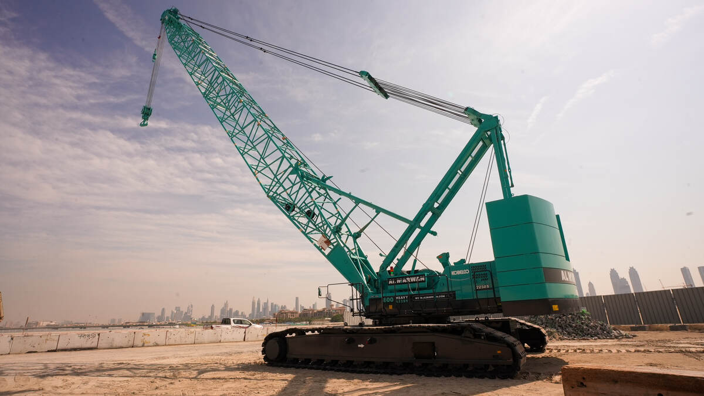

| No | Nama Peralatan | Jumlah | Kapasitas | Keterangan |
|---|---|---|---|---|
| 1 | Tower Crane | 5 | 10 Ton | Berfungsi untuk pengangkatan berat |
| 2 |  crawler crane | 10 | - | Digunakan untuk pengelasan |
| 3 | mobil crane | 3 | 5 Ton | Untuk memindahkan barang berat |
| 4 | gantry crane | 2 | 500 kW | Sumber listrik cadangan |
| 5 | forklift | 4 | - | Digunakan untuk alat pneumatik |